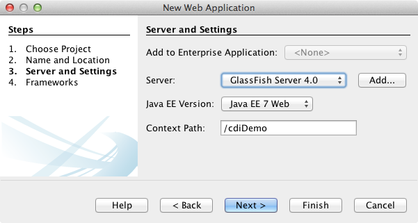

Apache NetBeans (incubating)
Apache NetBeans (incubating)Just released!
執筆: Andy Gibson
コンテキストと依存性の注入
-
CDIおよびJSF 2.0の開始

Figure 1. このページの内容は、NetBeans IDE 7.2、7.3、7.4および8.0に適用されます
JSR-299で指定されているコンテキストと依存性の注入(CDI: Contexts and Dependency Injection)はJava EE 6の不可欠な部分であり、サーブレット、エンタープライズBean、JavaBeansなどのJava EEコンポーネントが、アプリケーションのライフサイクル内で明確なスコープを持って存在できるようにするためのアーキテクチャを提供します。また、CDIサービスによって、EJBセッションBeanやJSF (JavaServer Faces)管理対象BeanなどのJava EEコンポーネントが注入可能になり、イベントの起動や監視による疎結合方式の対話が可能になります。
このチュートリアルは、Andy Gibson氏によって投稿されたGetting Started with JSF 2.0 and CDI in JEE 6というタイトルのブログをベースにしています。ここでは、IDEを使用して、JSF 2.0およびCDIをサポートするJava Webプロジェクトを設定する方法を示します。そしてCDI管理対象BeanをFaceletsページに接続する方法を示し、最後にEJBテクノロジとのCDI統合の簡単な例を示します。
NetBeans IDEは、コンテキストと依存性の注入のサポートを組込みでサポートしています。これには、プロジェクト作成時に`beans.xml` CDI構成ファイルを生成するオプション、注釈のためのエディタおよびナビゲーション・サポート、一般的に使用されるCDIアーティファクトを作成するための各種ウィザードなどが含まれています。
このチュートリアルを完了するには、次のソフトウェアとリソースが必要です。
| ソフトウェアまたはリソース | 必須バージョン |
|---|---|
7.2、7.3、7.4、8.0、Java EEバンドル版 |
|
バージョン7または8 |
|
Open Source Edition 3.xまたは4x |
*注意: *
-
NetBeans IDEのJavaバンドル版には、Java EE準拠のコンテナであるGlassFish Server Open Source Editionも含まれています。
CDIをサポートするJava Webプロジェクトの作成
この課題では、CDIをサポートするJSF 2.x対応のJava Webプロジェクトを作成します。
-
IDEのメイン・ツールバーにある「新規プロジェクト」(image::images/new-project-btn.png[])ボタンをクリックします([Ctrl]-[Shift]-[N]、Macの場合は[⌘]-[Shift]-[N])。
-
新規プロジェクト・ウィザードで、「Java Web」カテゴリを選択してから「Webアプリケーション」を選択します。「次」をクリックします。
-
プロジェクト名として「
cdiDemo」と入力し、プロジェクトの場所を設定します。「次」をクリックします。 -
サーバーをGlassFishサーバーに設定します。
-
Java EEバージョンをJava EE 6 WebまたはJava EE 7 Webに設定します。
*注意:*選択するJava EEバージョンによって、アプリケーションに対して有効なCDIバージョンが決まります。CDI 1.0とCDI 1.1には重要な違いがあります。
-
Java EEバージョンとしてJava EE 6 Webを指定した場合は、「コンテキストと依存性の注入を有効にする」オプションが選択されていることを確認します。「コンテキストと依存性の注入を有効にする」オプションが選択されると、プロジェクト・テンプレートの作成時に、プロジェクトの`WEB-INF`フォルダに`beans.xml`ファイルが生成されます。`beans.xml`ファイルはCDIによって使用され、プロジェクトがCDI Beanを含むモジュールであることをJava EE準拠のサーバーに伝えます。Java EE 6 WebはCDI 1.0をサポートしており、生成された`beans.xml`ファイルでCDI 1.0がバージョンとして指定されます。
-
Java EEバージョンとしてJava EE 7 Webを指定した場合、デフォルトでCDI 1.1が有効になっており、
beans.xmlファイルは不要です。Java EE 7では、beans.xmlがない場合、デプロイされるアーカイブは*暗黙的Beanアーカイブ*です。IDEで新規ファイル・ウィザードを使用して、Java EE 7 Webアプリケーションで手動で`beans.xml`ファイルを生成する場合、デフォルトではデプロイされるアーカイブは*明示的Beanアーカイブ*になります。`beans.xml`ファイルでCDI 1.1がバージョンとして指定され、bean-discovery-modeの属性がallに設定されるためです。
CDIアーカイブのタイプの詳細は、Java EE 7チュートリアルのCDIアプリケーションのパッケージを参照してください。

Figure 2. CDIオプションを選択すると、プロジェクトのbeans.xmlファイルが生成される
-
「次」をクリックします。
-
「フレームワーク」パネルで「JavaServer Faces」オプションを選択します。
-
「構成」タブをクリックし、「優先ページ言語」として「Facelets」が選択されていることを確認します。「終了」をクリックします。
「終了」をクリックすると、IDEはWebアプリケーション・プロジェクトを生成し、`index.xhtml`開始ページがエディタに表示されます。
-
「プロジェクト」ウィンドウで、「ライブラリ」>「GlassFish Server」ノードを展開すると、`weld-osgi-bundle.jar`ライブラリが自動的に追加されていることがわかります。GlassFish Serverには、JSR-299 CDI仕様のJBossの実装であるWeldが含まれています。 image::images/projects-window1.png[title="CDIのbeans.xmlファイルが挿入された新しいプロジェクトとWeld JARファイルが挿入されたGlassFishライブラリ"]
プロジェクトの作成時にJava EEバージョンとしてJava EE 6 Webを指定した場合は、「Web」ページ>「WEB-INF」フォルダに`beans.xml`ファイルが含まれます。現時点でこのファイルは空ですが、注釈の代替として、XMLでBeanの関連情報を指定するために使用できます。
JSFの式言語からのBeanへのアクセス
この課題では、EL構文を使用してCDI管理対象BeanをFaceletsページに接続する方法を示します。
-
「プロジェクト」ウィンドウで「ソース・パッケージ」ノードを右クリックし、「新規」>「Javaクラス」を選択します。
-
新規Javaクラス・ウィザードで、「クラス名」に「MessageServerBean」、「パッケージ」に「exercise1」と入力します。(ウィザードの完了時に新しいパッケージが作成されます。)「終了」をクリックします。 image::images/new-java-class.png[title="Javaクラス・ウィザードを使用した新しいJavaクラスの作成"]
新しいパッケージおよびクラスが生成され、エディタでクラスが開きます。
-
クラスに`@Named`および`@Dependent`注釈を付けて、文字列を返す1つのメソッドを作成します。
package exercise1;
*import javax.enterprise.context.Dependent;
import javax.inject.Named;*
*@Dependent
@Named*
public class MessageServerBean {
*public String getMessage() {
return "Hello World!";
}*
}@Dependent`および@Named`注釈の入力中に[Ctrl]-[Space]を押すと、エディタのコード補完サポートとJavadocドキュメントを呼び出せます。エディタのコード補完機能を使用して注釈を適用する(適切な注釈を選択して[Enter]を押す)と、自動的に`import`文がファイルに追加されます。Javadocのポップアップで「外部Webブラウザにドキュメントを表示」(image::images/external-web-browser-btn.png[])ボタンをクリックし、別個のウィンドウにフルサイズのJavadocを表示することもできます。
注意: @Dependent 注釈は、管理対象Beanのスコープを定義します。*暗黙的Beanアーカイブ*では、管理対象Beanは検出可能なだけで、スコープが指定されている場合にコンテナによってのみ管理されます。プロジェクトの作成時に beans.xml を作成しなかった場合、Java EEバージョンとしてJava EE 7 Webを指定すると、このチュートリアルのアプリケーションは暗黙的Beanアーカイブとしてパッケージされます。管理対象beanのスコープの指定の詳細は、Java EE 7チュートリアルの注釈を使用した管理対象Beanの構成を参照してください。
-
ファイルを保存します([Ctrl]-[S]、Macの場合は[⌘]-[S])。`@Named`注釈を追加することで、CDIで定義されているように`MessageServerBean`クラスは_管理対象Bean_になります。
-
エディタで([Ctrl]-[Tab]を押して)
index.xhtmlFaceletsページに切り替え、`<h:body>`タグに次の内容を追加します。
<h:body>
Hello from Facelets
*<br/>
Message is: #{messageServerBean.message}
<br/>
Message Server Bean is: #{messageServerBean}*
</h:body>EL式で[Ctrl]-[Space]を押すと、コード補完の候補を利用できます。エディタのコード補完によって、管理対象Beanおよびそのプロパティが一覧表示されます。MessageServerBean`クラスは@Named`注釈によってCDI管理対象Beanに変換されるため、JSF管理対象Beanと同じようにEL構文内でアクセスできるようになります。
image::images/facelets-el-completion.png[title="Javaクラス・ウィザードを使用した新しいJavaクラスの作成"]
6. IDEのメイン・ツールバーにある「プロジェクトの実行」(image::images/run-project-btn.png[])ボタンをクリックします。プロジェクトがコンパイルされてGlassFishにデプロイされ、アプリケーションの開始ページ(index.xhtml)がブラウザで開きます。「Hello World!」メッセージが`MessageServerBean`によってページに表示されます。
image::images/browser-output1.png[title="アプリケーションの開始ページにMessageServerBeanの詳細が表示される"]
7. メッセージBeanに戻って、メッセージを何か他のもの(「Hello Weld!」など)に変更します。ファイルを保存([Ctrl]-[S]、Macの場合は[⌘]-[S])してからブラウザをリフレッシュします。新しいメッセージが自動的に表示されます。IDEの「保存時にデプロイ」機能によって、保存した変更はすべて自動的にコンパイルされてサーバーに再デプロイメントされます。
ページの3行目から、クラス名が`exercise1.MessageServerBean`であることが確認できます。このBeanは単なるPOJO (Plain Old Java Object)であることに注目してください。Java EEで開発しているにもかかわらず、トランザクションやインターセプタなどが複数のレイヤーに重なった複雑なクラス階層は必要ありません。
仕組み
アプリケーションがデプロイされると、サーバーはCDI管理対象Beanを探します。Java EE 7アプリケーションでは、パスのクラスでCDI注釈がデフォルトでスキャンされます。Java EE 6アプリケーションでは、モジュールに`beans.xml`ファイルが含まれる場合、パスのクラスでCDI注釈がスキャンされます。CDIモジュールでは、すべてのBeanはWeldに登録され、@Named`注釈を使用してBeanが注入ポイントと照合されます。`index.xhtml`ページがレンダリングされたとき、JSFは、JSFに登録された式リゾルバを使用してページの`messageServerBean`の値を解決しようとしました。このうちの1つが、`messageServerBean`という名前で登録された`MessageServerBean`クラスを持つWeld ELリゾルバです。@Named`注釈で別の名前を指定することもできましたが、指定しなかったため、クラス名の最初の文字を小文字にしたデフォルト名で登録されました。Weldリゾルバは、JSFからのリクエストに応じてこのBeanのインスタンスを返します。EL式を使用する場合にのみBeanを命名する必要があります。CDIではクラスの型と修飾子注釈を使用することで、型を保証して注入できるため、注入の機構としてBeanの命名を使用しないでください。
EJBへのアップグレード
Java EEのスタックを使用しているため、EJB 3.1のおかげで少し変更を加えるのみでBeanをEJBとして簡単にデプロイできます。
-
`MessageServerBean`を開き、クラス・レベルで`javax.ejb.Stateless`注釈を追加して、文字列を「Hello EJB!」に変更します。
package exercise1;
*import javax.ejb.Stateless;*
import javax.enterprise.context.Dependent;
import javax.inject.Named;
/**
*
* @author nbuser
*/
@Dependent
@Named
*@Stateless*
public class MessageServerBean {
public String getMessage() {
return "*Hello EJB!*";
}
}-
ファイルを保存([Ctrl]-[S]、Macの場合は[⌘]-[S])してからブラウザに移動してリフレッシュします。次のような出力が表示されます。 image::images/browser-output-ejb1.png[title="@Stateless注釈を使用した、MessageServerBeanからEJBへの変換"] 驚くことに、ただ1つの注釈でPOJOが各種機能を備えたEJBに変わりました。変更を保存してからページをリフレッシュすると、変更した内容が表示されました。これを行うために、独特のプロジェクト構成、ローカル・インタフェース、または難解なデプロイメント・ディスクリプタは一切必要ありませんでした。
異なるEJBのタイプ
@Stateful`注釈を使用することもできます。または、シングルトン・インスタンスのための新しい@Singleton`注釈を試すこともできます。そうすると、javax.ejb.Singleton`と`javax.inject.Singleton`の2つの注釈があることに気付くでしょう。なぜシングルトンが2つあるのでしょうか。EJB以外の環境でCDIを使用している場合、CDIのシングルトン(`javax.inject.Singleton)を使用してEJBの外部でシングルトン・インスタンスを定義できます。EJBのシングルトン(javax.ejb.Singleton)は、トランザクション管理などのEJBの機能をすべて提供します。つまり、必要に応じて、またはEJB作業環境の有無に応じて選択できるようになっています。
関連項目
このシリーズの次回ではCDI注入に焦点をあて、Java EE環境での依存性の管理のためにCDIを使用する方法について詳しく見ていきます。
CDIおよびJSF 2.0の詳細は、次のリソースを参照してください。